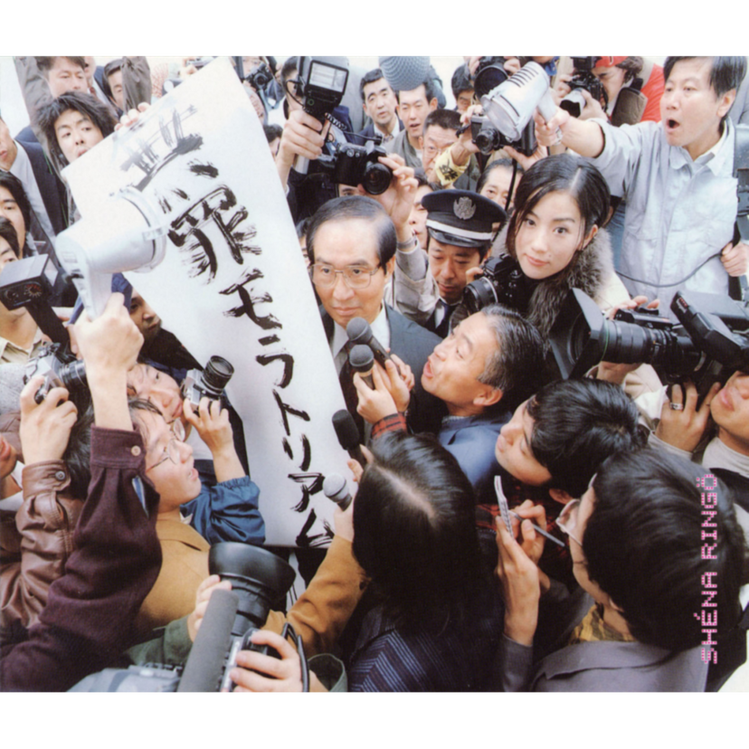
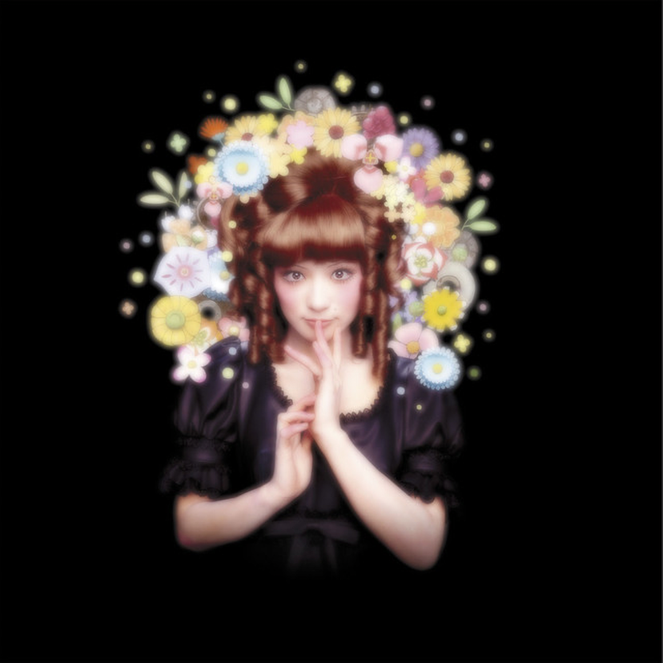
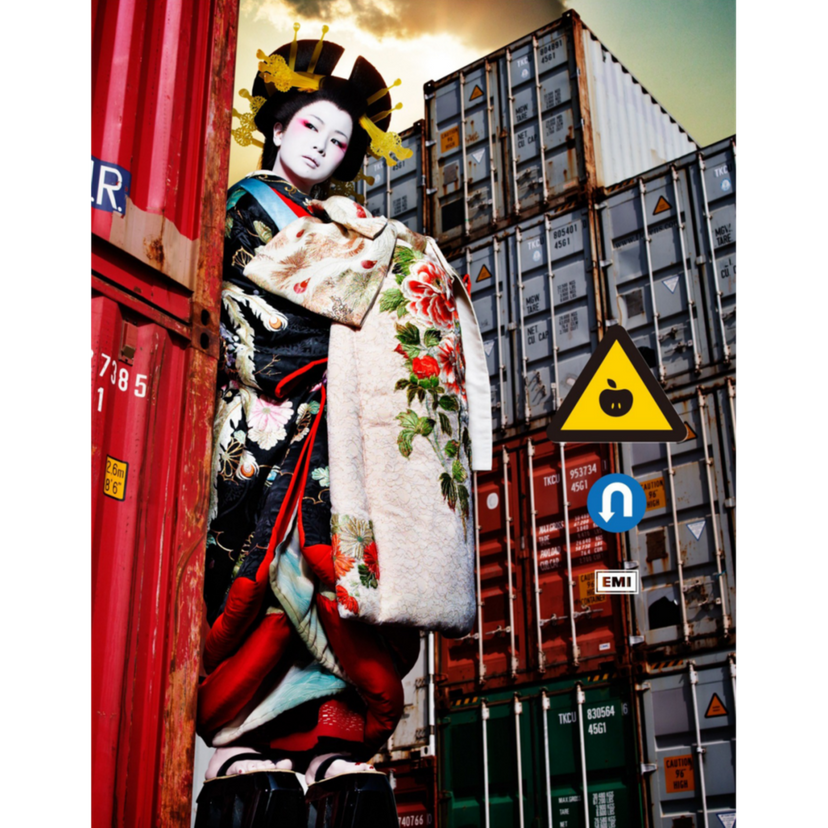

Albums
most of Sheena Ringo's work.

無罪モラトリアム
Released: February 24, 1999
正しい街 (Tadashii Machi - Correct City)
歌舞伎町の女王 (Kabuki-cho No Joou - Queen of Kabuki-cho)
丸の内サディスティック (Marunouchi Sadistic)
幸福論 (Koufukuron - A View of Happiness)
茜さす 帰路照らされど・・・ (Akane Sasu Kiro Terasaredo... - When It Begins To Get Dark...)
シドと白昼夢 (Sid To Hakuchuumu - Sid & Daydreams)
積木遊び (Tsumiki-Asobi - Playing With Blocks)
ここでキスして。(Koko de Kisu Shite. - Kiss Me.)
同じ夜 (Onaji Yoru - Ordinary Night)
警告 (Keikoku - Caution)
モルヒネ (Morphine)

勝訴ストリップ
Released: March 31, 2000
虚言症 (Kyogenshou - I Am a Liar)
浴室 (Yokushitsu - Bathroom)
弁解ドビュッシー (Benkai Debussy - Excuse Debussy)
ギブス (Gips)
闇に降る雨 (Yami Ni Furu Ame - A Driving Rain in the Darkness)
アイデンティティ (Identity)
罪と罰 (Tsumi To Batsu - Crime and Punishment)
ストイシズム (Stoicism)
月に負け犬 (Tsuki Ni Makeinu - A Broken Man and Moonlight)
サカナ (Sakana - Titbits)
病床パブリック (Byoushou Public - Sickbed Public)
本能 (Honnou - Instinct)
依存症 (Izonshou - I Am an Addict)

加爾基 精液 栗ノ花
Released: February 23, 2003
宗教 (Shuukyou - Religion)
ドッペルゲンガー (Doppelganger)
迷彩 - 戦後最大級ノ暴風雨圏内歌唱 (Meisai - Camouflage)
おだいじに (Odaiji Ni - Please Take Care)
やっつけ仕事 (Yatsutsuke Shigoto - Rush Job)
茎(STEM)～大名遊ビ編～
とりこし苦労 (Torikoshi Kurou - Worringly Unnecessarily)
おこのみで (Okonomi De - As You Wish)
意識 (Ishiki -Consciously)
ポルターガイスト (Poltergeists)
葬列 (Souretsu - Funeral) (Ft. Toshiyuki Mori)

平成風俗
Released: February 21, 2007
ギャンブル (Gamble)
茎 (Kuki - Stem)
錯乱 (TERRA ver.) (Sakuran - Confusion)
ハツコイ娼女 (Hatsukoi Shoujo - “Firstlove” Singer)
パパイヤマンゴー (Papaya Mango - Mangos)
意識 (Ishiki - Consciously)
浴室 (Youkushitsu - La Salle de Bain)
迷彩 (Meisai - Camouflage)
ポルターガイスト (Poltergeists)
カリソメ乙女 (Karisome Otome - “Temporary Virgin”)
花魁 (Oiran - Courtesan)
夢のあと (Yume No Ao - A Scar of Dreams)
この世の限り (Kono Yo No Kagiri - Memory)

三文ゴシップ
Released: June 24, 2009
流行 (Ryuukou) - Vogue
労働者 (Roudousha) - Blue Collar
密偵物語 (Mittei Monogatari) - Clandestine
〇地点から (Zero Chiten Kara)
都合のいい身体 (Tsugou No Ii Karada) - The Leading Hitter
旬 (Shun) - Season
二人ぼっち時間 (Futari-bocchi Jikan) - Just the Two of Us
マヤカシ優男 (Mayakashi Yasaotoko) - Fake Fellow
尖った手口 (Togatta Teguchi) - Sharp Practice
色恋沙汰 (Irokoizata) - Excitement
凡才肌 (Bonsai Hada) - Ordinary Ability
余興 (Yokyou) - Alone
丸ノ内サディスティック (Marunouchi Sadistic) [EXPO Version]

逆輸入～港湾局～
Released: May 27, 2014

日出処
Released: November 5, 2014
静かなる逆襲 (Quiet Counterattack)
自由へ道連れ (Jiyuu e Michizure) - Collateral Damage
走れゎナンバー (To that Ocean of Trees)
赤道を越えたら (Cruzar a Linha Do Equador)
JL005便で
ちちんぷいぷい (Manipulate the Time)
今 (Present)
いろはにほへと (Irohanihoheto) - Les Couleurs Chantent
ありきたりな女 (Arikitari no Onna)
カーネーション (Carnation) -L'œillet-
孤独のあかつき (Kodoku no Akatsuki - La Solitude de l'aube)
NIPPON
ありあまる富 (Ariamaru Tomi) - The Invaluable
人生は夢だらけ (Ma Vie, Mes Rêves)
おいしい季節 (The Creamy Season)
少女ロボット (Girl Robot)
暗夜の心中立て (Le Vœu D'amour)
薄ら氷心中 (A Double Suicide)
重金属製の女 (The Heavy Metallic Girl)
おとなの掟 (The Adult Code)
名うての泥棒猫 (Le Célèbre Chat Voleur)
華麗なる逆襲 (Splendid Counterattack)
野性の同盟 (The Wild Union)
最果てが見たい (Saihate Ga Mitai - ¿Dónde Quiere Estar Mi Alma Viajera?)